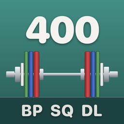

BIG3の合計を、5×5で伸ばす
Next Totalは、スクワット・ベンチプレス・デッドリフトの3種目の合計を伸ばすためのiPhoneアプリです。
合計と、次にどこで積むか(Plus)
挙げ切った5回の重さから、種目ごとの推定1RMと合計を出します。節目の合計(400kg / 1000lb)まであと何kgかと、その残りを伸びやすい種目から順に、どの種目で何kg積むかに分けて見せます。止まっている種目は後回しにします。
今日の重さとプレート
その日の種目・重さ・プレートの付け方・ウォームアップを1枚で出します。記録をつけると(Plus)、全部のセットができた種目は次回に少し重く、同じ重さで3回続けて届かなければ10%下げて積み直し、2度止まった種目は週ごとの進め方に切り替えます。痛みがある日・時間がない日・しばらく休んだあとの戻し方も決めてあります。
ガイド
5×5のやり方、3種目のフォーム、疲れと安全、伸び方と回復、挑戦の日の進め方を、根拠にした文献の要約つきで載せています。
無料で使えるものと Plus
無料で使えるのは、最初の案内・今日の予定を見ること(種目・重さ・回数・プレートの付け方・ウォームアップ・フォームの絵)・ガイド・記録の書き出し(CSV・JSON)です。記録をつけて次の重さを決めること、合計・配分・節目・合計を測る日・予定と知らせ・これまでの記録と分析・休憩タイマー・ウィジェット・画像の共有は Plus で使えます。月額・年額・買い切りから選べ、月額は初めての方は無料体験から始められます(無料体験が終わると月額の料金が自動で請求されます。終わる24時間前までに解約すれば請求されません)。価格はApp Storeでご確認ください。
約束
- 解約はiPhoneの設定からいつでも。アプリの中で引き止めません。
- 買い切りは、これから増える機能にも使えます。
- 記録はこのiPhoneの中に置き、アプリが外へ送ることはありません。アカウント・広告・解析はありません。
- 記録はいつでも書き出せます(課金に関係なく)。
- この合計に必ず届くとは言いません。見込みは全部のセットができた場合の計算です。
重いバーベルを扱うときは、セーフティバーや補助者を使ってください。痛みが続くときは医師に相談してください。
In English
Next Total is an iPhone app for growing the combined total of squat, bench press and deadlift with 5×5. It shows your estimated total, how far you are from a milestone, and which lift to add weight to next.
Free: the setup, viewing today's plan (lifts, weights, reps, plate loading, warm-ups, form figures), the Guide, and exporting your records (CSV/JSON). Plus: logging and next weights, the total and split, milestones and the measure day, the schedule and reminders, history and analysis, the rest timer, widgets and image sharing. Choose monthly, yearly or one-time. New subscribers can start the monthly plan with a free trial; when it ends the monthly price is charged automatically unless you cancel at least 24 hours before. See the App Store for prices.
- Cancel anytime in iPhone Settings. The app won't try to hold you back.
- The one-time purchase covers features we add later.
- Your records stay on this iPhone. The app never sends them anywhere. No account, ads or analytics.
- You can always export your records, with or without Plus.